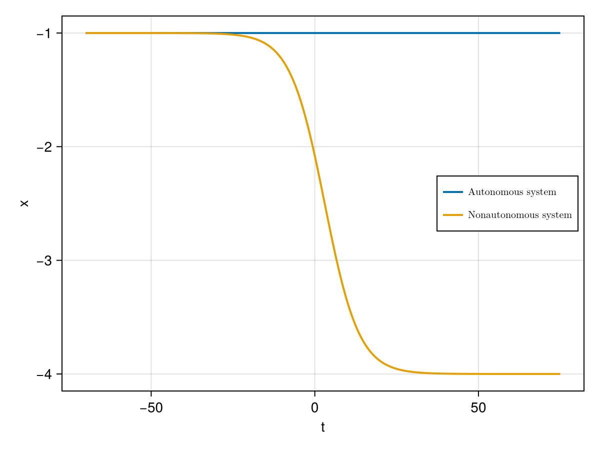
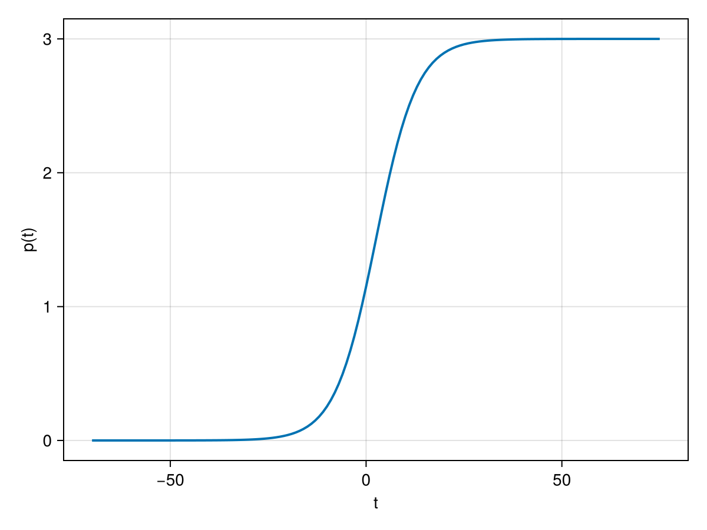

Studying R-Tipping
Consider an autonomous deterministic dynamical system auto_sys (i.e. a CoupledODEs) of which you want to ramp one parameter, i.e. change the parameter's value over time.
Applying this parameter ramping is here implemented as a two-step process:
- Specify a section $p([section_start, section_end])$ of a function $p(t)$ describing the shape of the parameter ramping you would like to consider. This is done by defining a
RateConfigtype. - Specify how you would like use this section of $p(t)$ to ramp one parameter of
auto_sys. This is done by defining aRateSystemtype which then returns a non-autonomous systemRateSystem.system(i.e. aCoupledODEs) with the parameter ramping incorporated.
For times t < forcing_start, the returned system RateSystem.system is autonomous, for forcing_start < t < forcing_start + forcing_length it is non-autonomous with the paramter ramping given by the RateConfig and for forcing_start + forcing_length < t the system is autonomous again. This setting is a widely used and convenient for studying R-tipping.
Example
Let us explore a simple prototypical example of how to use the R-tipping functionality of this package.
We consider the following simple one-dimensional autonomous system with one attractor, given by the ordinary differential equation:
\[\begin{aligned} \dot{x} &= (x+p)^2 - 1 \end{aligned}\]
The parameter $p$ shifts the location of the extrema of the drift field. We implement this system as follows:
using CriticalTransitions
using CairoMakie
function f(u,p,t) # out-of-place
x = u[1]
dx = (x+p[1])^2 - 1
return SVector{1}(dx)
end
x0 = [-1.]
auto_sys = CoupledODEs(f,x0,[0.0]);1-dimensional CoupledODEs
deterministic: true
discrete time: false
in-place: false
dynamic rule: f
ODE solver: Tsit5
ODE kwargs: (abstol = 1.0e-6, reltol = 1.0e-6)
parameters: [0.0]
time: 0.0
state: [-1.0]
Applying the parameter ramping
Now, we want to explore a non-autonomous version of this system by applying a parameter shift s.t. speed and amplitude of the parameter shift are easily modifiable but the 'shape' of it is always the same - just linearly stretched or squeezed.
- First specify a section of a function p(t) that you would like to use to ramp a parameter of auto_sys:
We define the function p(t):
p(t) = tanh(t); # A monotonic function that describes the parameter shift
section_start = -5; # start of the section of p(t) we want to consider
section_end = 5; # end of the section of p(t) we want to consider
rc = RateConfig(p, section_start, section_end)RateConfig(Main.p, -5.0, 5.0)- Then specify how you would like to use the
RateConfigto shift thepidx'th parameter of auto_sys:
pidx = 1 # Index of the parameter within the parameter-container of auto_sys
forcing_start = -50. # Time when the parameter shift should start
forcing_length = 105. # Time-interval over which p([section_start, section_end]) is spread out (for window_length > section_end - section_start) or squeezed into (for window_length < section_end - section_start)
forcing_scale = 3.0 # Amplitude of the ramping. `p` is then automatically rescaled
t0 = -70.0 # Initial time of the resulting non-autonomous system (relevant to later compute trajectories)
RateSys = RateSystem(auto_sys, rc, pidx; forcing_start=forcing_start, forcing_length=forcing_length, forcing_scale=forcing_scale, t0=t0)RateSystem(1-dimensional CoupledODEs, CriticalTransitions.var"#66#67"{Float64, Float64, Float64, RateConfig, Float64}(-50.0, 105.0, 3.0, RateConfig(Main.p, -5.0, 5.0), 0.0), 1)Note: Choosing different values of the forcing_length allows us to vary the speed of the parameter ramping, while its shape remains the same, and it only gets stretched or squeezed. Note: If p(t) within the RateConfig is a monotonic function, the forcing_scale will give the total amplitude of the parameter ramping. For non-monotonic p(t), the forcing_scale will only linearly scale the amplitude of the parameter ramping, but does not equal the total amplitude.
Now, we can compute trajectories of this new system RateSys.system in the familiar way:
T = forcing_length + 40.0; # length of the trajectory that we want to compute
auto_traj = trajectory(auto_sys, T, x0);
nonauto_traj = trajectory(RateSys.system, T, x0);(1-dimensional StateSpaceSet{Float64} with 1451 points, -70.0:0.1:75.0)We plot the two trajectories:
fig = Figure();
axs = Axis(fig[1,1],xlabel="t",ylabel="x");
lines!(axs,t0.+auto_traj[2],auto_traj[1][:,1],linewidth=2,label=L"\text{Autonomous system}");
lines!(axs,nonauto_traj[2],nonauto_traj[1][:,1],linewidth=2,label=L"\text{Nonautonomous system}");
axislegend(axs,position=:rc,labelsize=10);
fig
We can also plot the shifted parameter p(t):
figPar = Figure();
axsPar = Axis(figPar[1,1],xlabel="t",ylabel="p(t)");
lines!(axsPar,range(t0,t0+T,length=Int(T+1)), RateSys.forcing.(range(t0,t0+T,length=Int(T+1))),linewidth=2);
figPar
Author: Raphael Roemer; Date: 30 Jun 2025